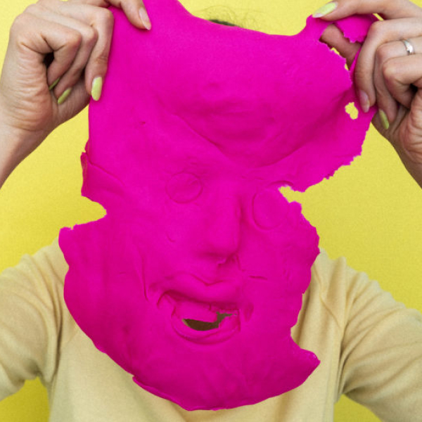
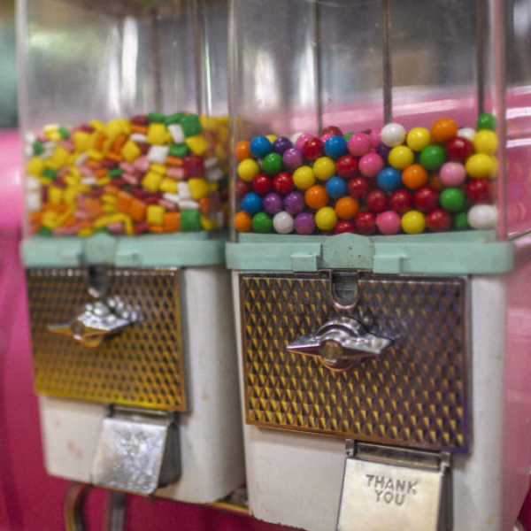

Exercice 2 : Création d'une mosaïque d'images (avec CSS3 Grid)




Directives :
Vous devez créer une mosaïque d'images. Pour se faire, vous devez respecter les contraintes suivantes
- La mosaïque doit respecter le positionnement présenté dans l'image de droite;
- Vous devez utiliser les propriétés de CSS3 Grid tels que vu dans les notes du module 14 du cours;
- Vous devez ajouter un petit espace de 10 pixels entre les images de la mosaïque;
- Vous pouvez utiliser les 6 images de votre choix, disponibles dans le dossier /img du site;
- N'oubliez pas de faire au moins 1 commit et push vers GitLab pour cette page.